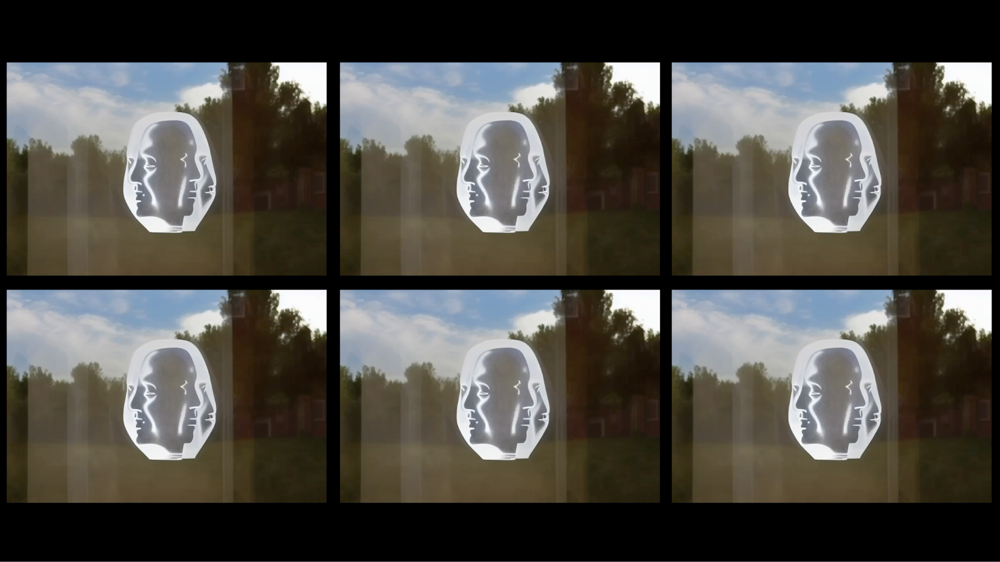
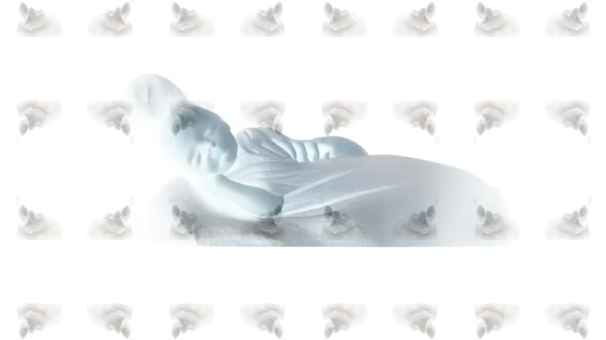
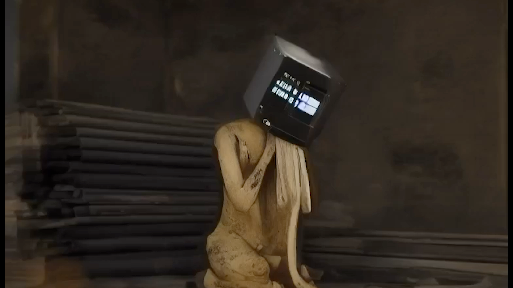
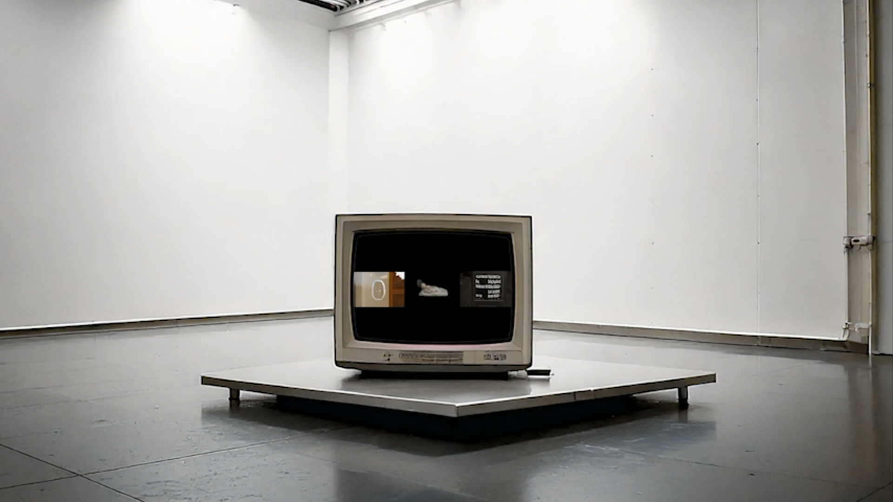
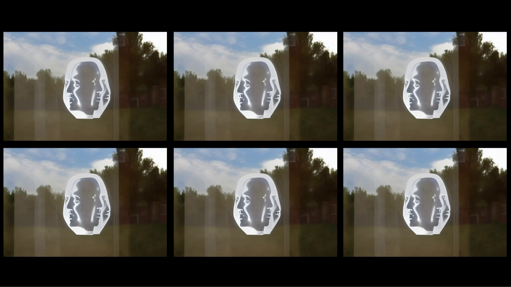
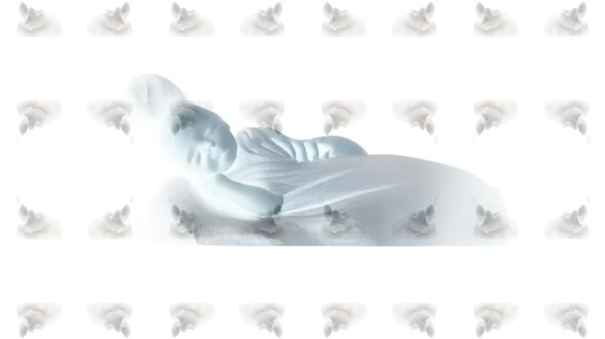
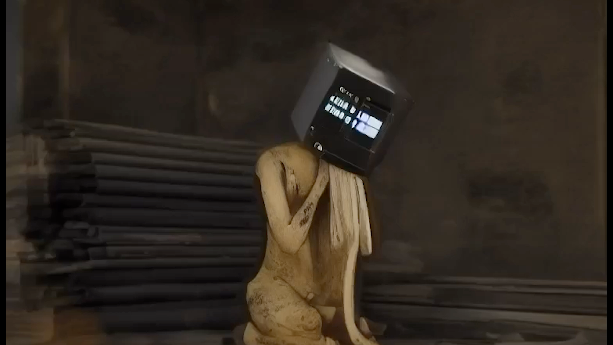
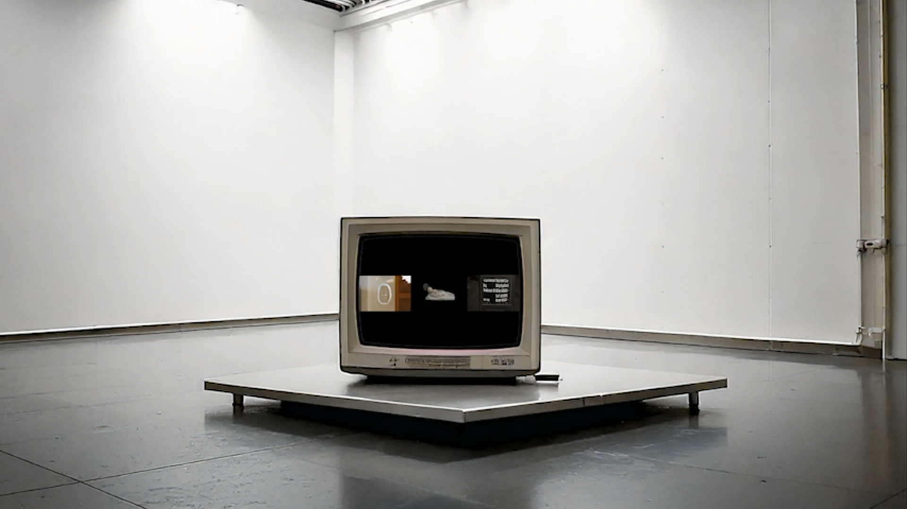

(re)generative life, 2024
Sleep is seen as unproductive from a capitalist perspective. 20th-century economic and management theories framed rest as an obstacle to productivity, a problem to be managed, minimized, or eliminated entirely, and were obsessed with documenting and tracking rest, sleep, and fatigue. As tracking and sensortechnologies become more widespread, and with the pursuit of greater efficiency, individuals increasingly engage in self-tracking as a form of self-optimization to manage and control their own behaviors. Using devices to track my sleep patterns, I collected data on not only the sleep itself but also my sleep quality and dreams. The data was processed through AI to generate a video out of my sleep patterns.
This fragmented video is a critique of our obsession with productivity while emphasizing the coexistence and balance between generation and regeneration. ‘(re)generative life’ is a call for resistance to endless productivity.
 






